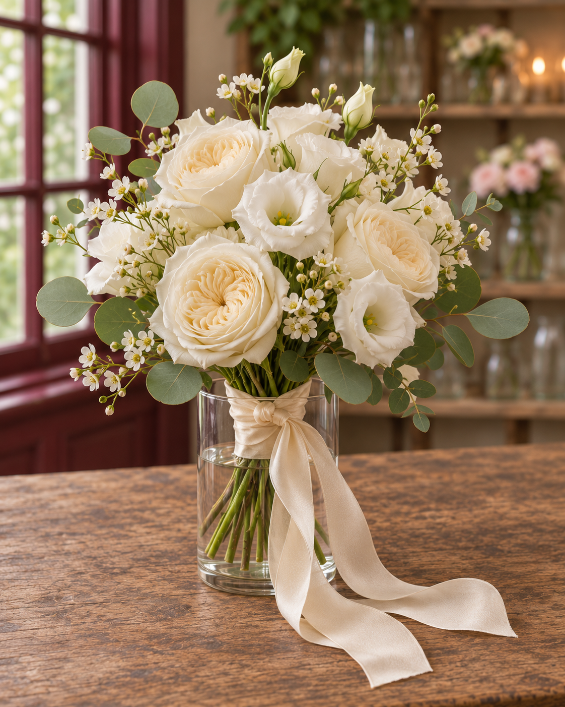

Ramos de novia y complementos
¿Os casáis o tenéis algo que celebrar? Creamos ramos de novia, centros de mesa y decoración floral a vuestra medida. Contadnos cómo imagináis ese día y os ayudamos a darle forma con flores.
Cuéntanos tu idea